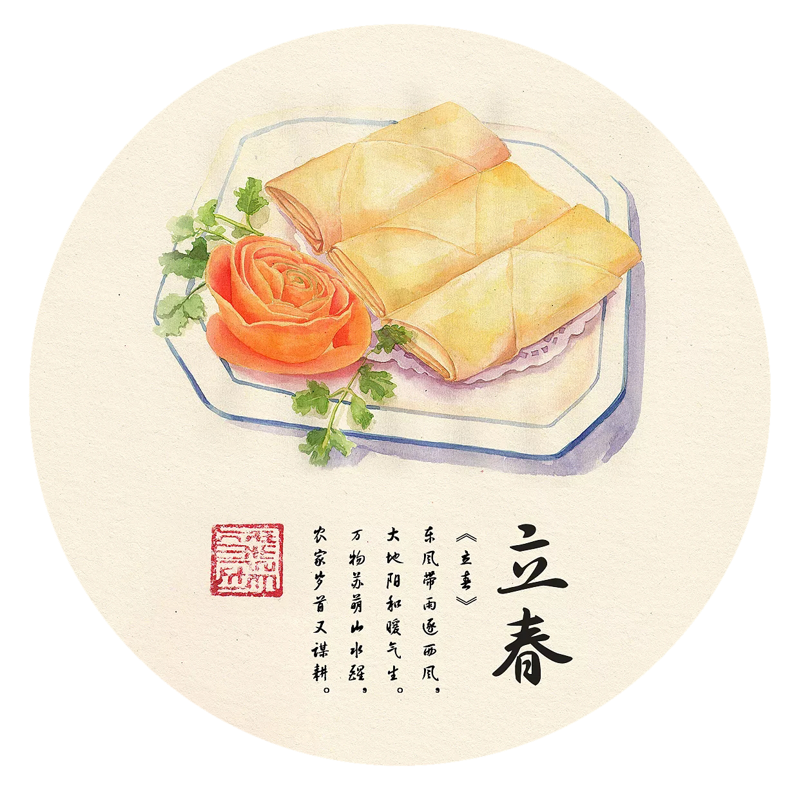
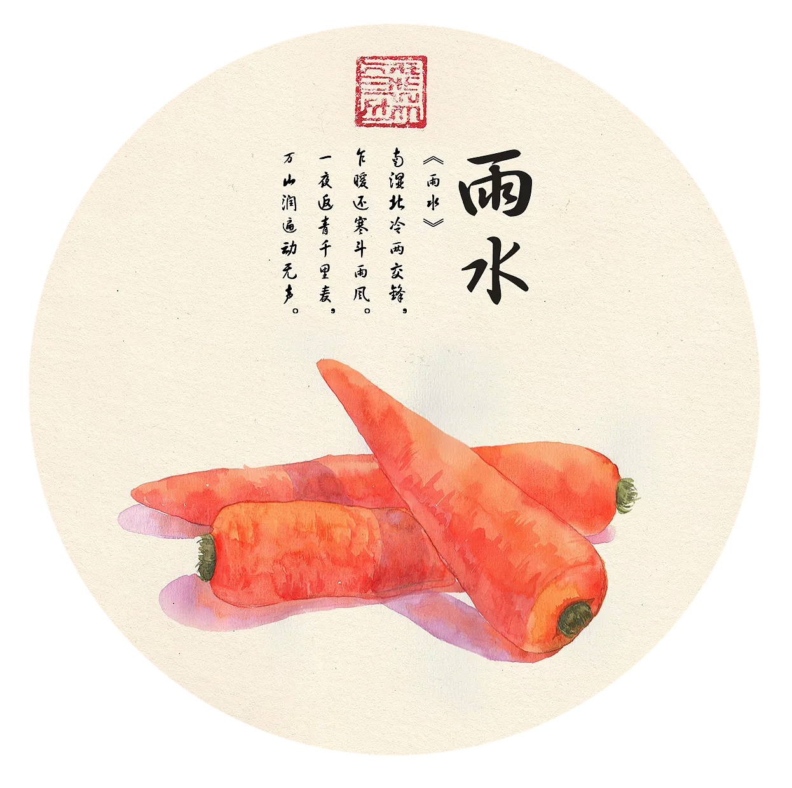
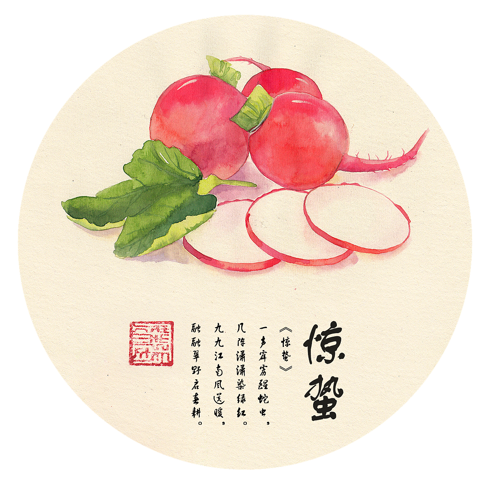
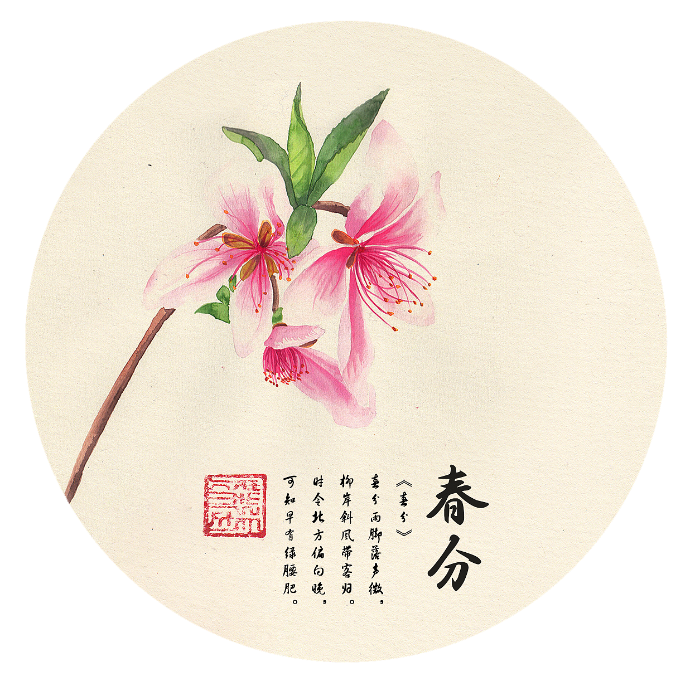
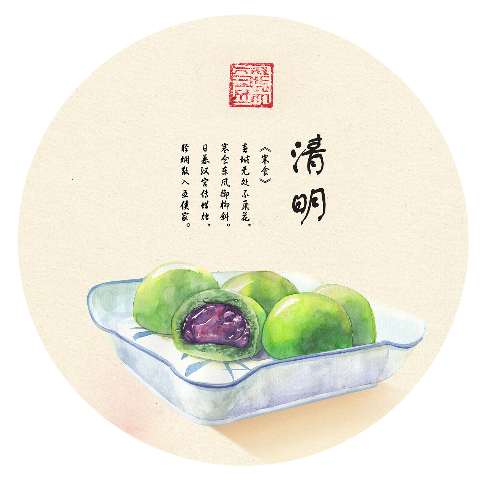
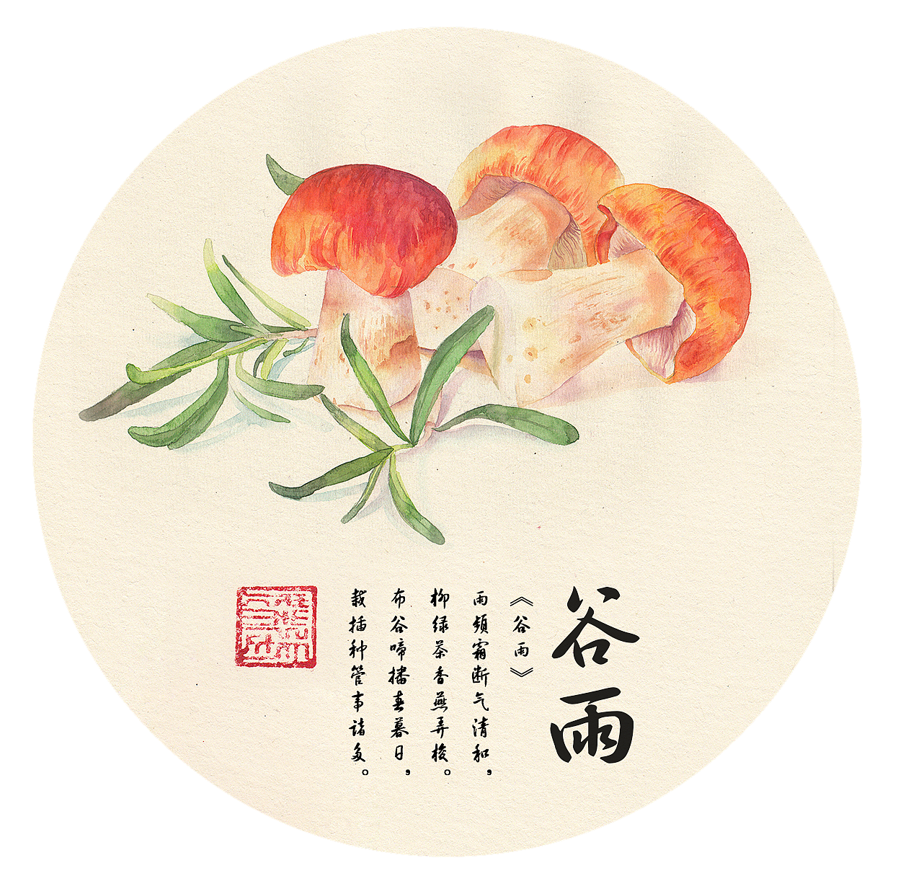

| 立春不仅是农历二十四节气中的第一个节气，立春是从天文上来划分的，而在自然界、在人们的心目中，春意味着风和日暖，鸟语花香；春也意味着万物生长，农家播种。故《立春》诗云："东风带雨逐西风，大地阳和暖气生。万物苏萌山水醒，农家岁首又谋耕。"（左河水）。在气候学中，春季是指候（5天为一候）平均气温10℃至22℃的时段。 |  |
| 雨水，是二十四节气之中的第2个节气，位于每年正月十五前后（公历2月18-20日），太阳到达黄经330°。 雨水和谷雨、小雪、大雪一样，都是反映降水现象的节气。 这天通常出嫁的女儿要回家探望父母，要给母亲送一段红绸和炖一罐肉。 |  |
| 惊蛰，古称"启蛰"，是二十四节气中的第三个节气，标志着仲春时节的开始；太阳到达黄经345°时。《月令七十二候集解》："二月节……万物出乎震，震为雷，故曰惊蛰，是蛰虫惊而出走矣。" |  |
| 春分，是春季九十天的中分点。二十四节气之一，每年公历大约为3月20日左右，太阳位于黄经0°（春分点）时。春分这一天太阳直射地球赤道，南北半球季节相反，北半球是春分，在南半球来说就是秋分。 |  |
| 清明节又叫踏青节，在仲春与暮春之交。是中国传统节日，也是最重要的祭祀节日之一，是祭祖和扫墓的日子。中华民族传统的清明节大约始于周代，距今已有二千五百多年的历史。 |  |
| 谷雨是二十四节气的第六个节气，也是春季最后一个节气，每年4月19日～21日时太阳到达黄经30°时为谷雨，源自古人"雨生百谷"之说。同时也是播种移苗、埯瓜点豆的最佳时节。 |  |